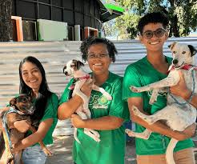

Quem Somos ONG
Nós, da ONG Patas Amigas, não somos apenas um grupo de voluntários; somos uma ponte de esperança para aqueles que não têm voz. Nascemos da indignação diante do cenário de abandono, negligência e crueldade que vitimiza milhões de animais anualmente. Nossa existência é a manifestação de uma profunda convicção: a de que todo ser vivo merece dignidade, cuidado e uma chance de amar e ser amado.
Em essência, somos uma Organização Não-Governamental dedicada ao resgate, reabilitação e realocação de cães e gatos (e/ou outros animais, se for o caso) em situação de risco. Agimos onde a dor é mais aguda, retirando animais de situações de maus-tratos, acidentes ou de vidas solitárias nas ruas.
Missão da ONG Patas Amigas
A nossa Missão é um juramento de amor e serviço. Ela exige resiliência, transparência e a colaboração contínua da comunidade. A cada animal que volta a abanar o rabo, a cada ferida que cicatriza, a cada lar encontrado, reafirmamos que a nossa Missão está sendo cumprida: provar que o valor de uma sociedade se mede pela forma como ela trata os seus mais vulneráveis.
Contato com a ONG Patas Amigas
Endereço: Rua passagem Bingo, 123 - Bairro Bela Vista - São Paulo/SP
Telefone: (11) 99999-9999
Email: contato@organizaçãoongpatasamigas.com